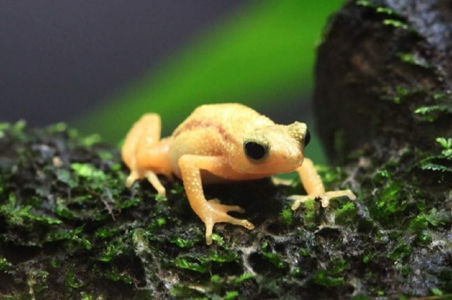

Информация про жаб
Жабы, или настоящие жабы (лат. Bufonidae), — семейство бесхвостых земноводных, единственное, в котором все представители называются «жабами», хотя некоторые виды можно назвать лягушками (например, ателопов). На более высоком таксономическом уровне применение термина «жаба» не ограничивается только данным семейством, а также используется для видов из других семейств (например: жаба-повитуха, седлоносная жаба, лягушковидная жаба, носатая жаба).
Описание
Внешность и размеры жаб сильно варьируют. Длина тела колеблется от 20 мм (гвианский арлекин) до 550 мм (жаба Бломберга). Масса — от нескольких граммов до 3,65 кг. Туловище обычно широкое, грузное, конечности короткие. Рёбра отсутствуют. Кожа, как правило, сухая на ощупь, толстая, зачастую покрыта многочисленными гладкими или острыми бугорками-бородавками разного размера. Язык узкий, большой. Зубы в большинстве случаев частично или полностью редуцированы. Зрачок горизонтальный, пальцы задних конечностей частично связаны плавательной перепонкой. Поперечные отростки крестцового позвонка не расширены в диски.
Позади глаз хорошо заметны околоушные железы (паротиды), которые у ряда тропических форм отсутствуют. Эти железы содержат алкалоидный яд — буфотоксин, который жабы выделяют при стрессе. Состав и пропорции яда у разных видов различаются. Яд некоторых жаб (например, колорадской жабы) используется в качестве рекреационного психотропного средства.
У самцов семейства присутствует уникальный неотенический орган Биддера — рудиментарный яичник, который развивается на переднем крае личиночных семенников и может сохраняться у многих взрослых амфибий. При определённых условиях орган становится активным яичником, и самец, по сути, становится самкой.
Интересные факты
- В 1935 году 102 жабы были доставлены в Австралию с территории Гавайев для борьбы с насекомыми. Планировалось, что жабы будут оберегать плантации сахарного тростника. В Австралии жабы успешно размножились, и уже через два месяца их численность превысила отметку в 3000 штук. Жабы не стали уничтожать вредителей сахарного тростника, так как нашли себе более лёгкую добычу. И теперь уже сами жабы угрожают биологическому разнообразию Австралии.
- Одна жаба откладывает от 1200 до 7000 яиц (выглядит такая «кладка», как две студенистые ленты), из которых через месяц появляются головастики. Через 3-4 месяца головастики превращаются в жаб и водоем покидают.
- Жаба-брызгун Киханси – самая маленькая жаба в мире. Размер жабы не превышает габариты монетки в пять рублей. Длина взрослой самки составляет 2,9 сантиметров, длина самца не превышает 1,9 сантиметров.

Жаба Киханси
- Среди жаб, с весом чуть более 2 кг, самой крупной является жаба Ага, к тому же эта тропическая жаба еще и самая ядовитая.
- В течение 1930-х годов врачи вводили в этих лягушек образцы женской мочи. Если моча принадлежала беременной женщине, в результате влияния гормона беременности (человеческий хорионический гонадотропин) у лягушки наступала овуляция. В этом случае на следующий день в емкости было полно икры.
- В северной Турции буйволы бродят по болотам и собирают лягушек. Умные болотные лягушки выяснили, что мохнатые звери привлекают мух. Когда буйвол приближается, амфибии карабкаются на его спину и выслеживают насекомых. Это также избавляет буйволов от раздражающих мух.